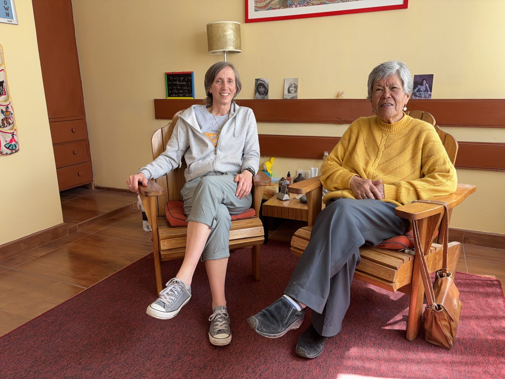

Un proyecto de escritura bilingüe desde el encuentro entre dos mundos
Qillqasqanchis · Lo que escribimos
Este es un espacio para reflejar conversaciones mantenidas entre Gina -profesora, peruana y quechua hablante- y Loreto -psicóloga, española y castellano parlante— sobre temas que nos inquietan de la realidad que vivimos. Compartiendo y aprendiendo la una con la otra al contrastar y sorprendernos de nuestro entedimiento de la vida fruto de la cultura en la que cada una ha vivido.

Iskaynin · Las dos
Gina Maldonado, profesora, y Loreto, psicóloga, en una de las tantas conversaciones que dieron origen a este proyecto.
00
PresentaciónCómo dos caminos —el de una psicóloga llegada de España y el de una profesora de quechua— se encuentran en este proyecto de escritura bilingüe.
01
Salud mental · Cosmovisión andinaUna aproximación a cómo distintas cosmovisiones andinas han nombrado y comprendido el deseo de morir, y lo que eso puede decirnos hoy.